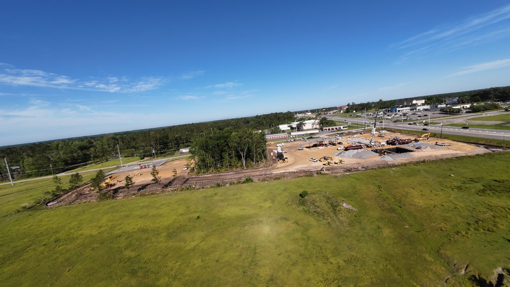
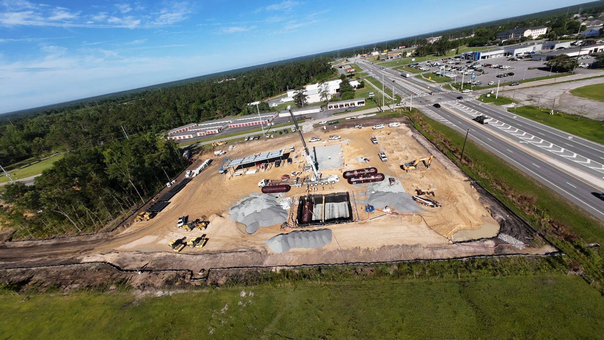
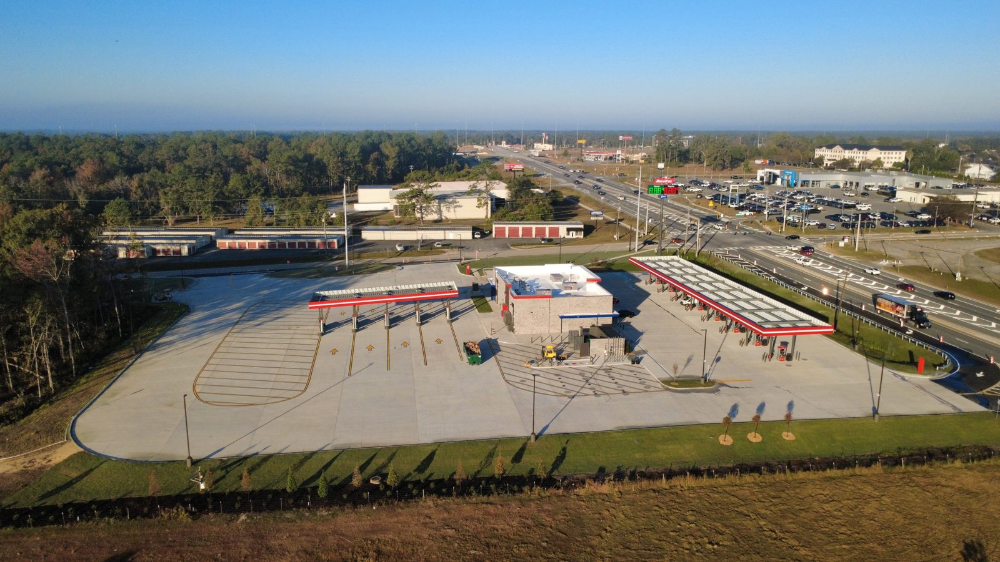

Aerial property documentation · Marcus Jay Herring, LLC · Valdosta, GA
Date-stamped, matched-angle aerial packs for general contractors and small developers in Valdosta and Lowndes County. Same vantage each visit — so a pad, a tank, or a roof line can be compared without another truck roll.
This is the work satellite and EagleView miss: new builds that aren't on a map yet, and lots under heavy South Georgia canopy. You get organized folders — still photos, a short note on what changed since last time, and a date on every frame. Qualitative change between visits. One operator, plain English, local.
Aerial documentation only. Not a land survey. Not a stamped professional report. Not a dollar figure for a carrier. Not a takeoff or a measurement set. Not a licensed building or roof review. Photos and a plain-language note on what looks different — that's the pack.
The RaceTrac sequence below is a construction-progress sample from a local job: fuel-tank install in May, finished station in November.


